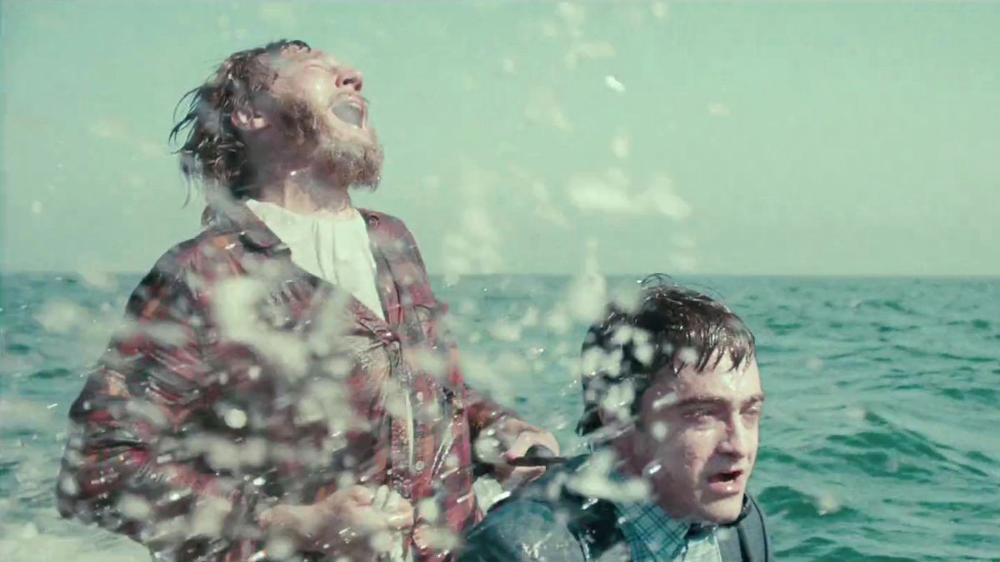

"Pero tal vez todo el mundo es un poco feo. Y tal vez todos seamos feos, moribundos sacos de mierda, y tal vez todo lo que se necesita es que una persona esté de acuerdo con eso, y luego el mundo entero estará bailando, cantando y tirando pedos, y todos se sentirán un poco menos solos."
El debut de Daniel Scheinert y Daniel Kwan (mejor conocido como ‘’The Daniels’’) como directores y escritores de un largometraje, producido por A24. Tengo que decir, admirables creadores porque esta absurda película de comedia/ drama está llena de riesgos y originalidad ya que realmente nada de lo que pasa tiene sentido. Si quieres ver algo racional, lógico y con coherencia, ni se te ocurra ver esto. Y, por esa misma razón, es que tiene un gran encanto: no se toma a sí misma en serio.
La película empieza con Hank (Paul Dano) varado en una isla desierta. Solo, aburrido y sin rumbo. Justo antes de quitarse la vida, poniendo una soga sobre su cuello, ve a un hombre (Daniel Radcliffe) en la orilla. Para mala suerte de Hank, es un cadáver… Que resulta ser bastante hablador y lleno de flatulencias. Usando los gases a su ventaja, Hank llega a tierra firme. Desafortunadamente, ahora está perdido en la naturaleza y Hank y el cadáver, llamado Manny, emprenden su peculiar y emocionante aventura.
En esta aventura, Manny y Hank van demostrando poco a poco sus personalidades, completamente opuestas. Manny es infantilmente curioso, sin filtro, sin prejuicios o inseguridades, pregunta el porqué de todo, por que hacemos lo que hacemos y sentimos lo que sentimos mientras Hank, solitario, ansioso e inestable, intenta explicar el estado actual del mundo real pero no tiene respuestas realmente lógicas, cayendo en cuenta de que muchas reglas, leyes y lineamientos ya establecidos o sobreentendidos son hechos por otros humanos y se pueden romper fácilmente y así se van enseñando las pequeñas maravillas de la experiencia del ser humano el uno al otro.

Realmente este largometraje es muy sencillo y chistoso pero con mucho corazón y ternura, y la profundidad y el propósito en la trama es bastante obvio. Es sobre el amor propio (inserte aquí la escena del beso bajo el agua) y toca temas como el balance, el individualismo, el significado de la vida y la aceptación de nuestra propia mortalidad. Es sobre apreciar hasta la parte más extraña, asquerosa y escondida que forma parte de ti y que todos tenemos. De darte cuenta de que todo lo que necesitas ya lo tienes y no hay nada ni nadie que te pueda ayudar más que tú mismo.
Definitivamente, y lo digo con toda la certeza, esta película no es para todo el mundo. Tiene un humor ridículo e incómodo, a veces desagradable e inesperado que puede desanimar a cualquiera. Sin embargo, te hace preguntar por qué te hace sentir de esa manera y cuestiona esas razones. Lo que sí es seguro, es que este mensaje llegará a aquellos que más necesitan escucharlo. A aquellas personas que se sienten solas, vacías, sin rumbo y que cuestionan su lugar dentro del orden natural de las cosas.
✰ Puntuación: 8/10 ✰
A pesar de que esta película tuvo un gran significado para mí, admito que el humor puede volverse repetitivo y demasiado infantil. Y solo se disfruta si estás realmente dispuesto a apreciarla por lo que es, ya que la moraleja cae en un tema muy básico y simple del ser humano que no es nada desconocido.